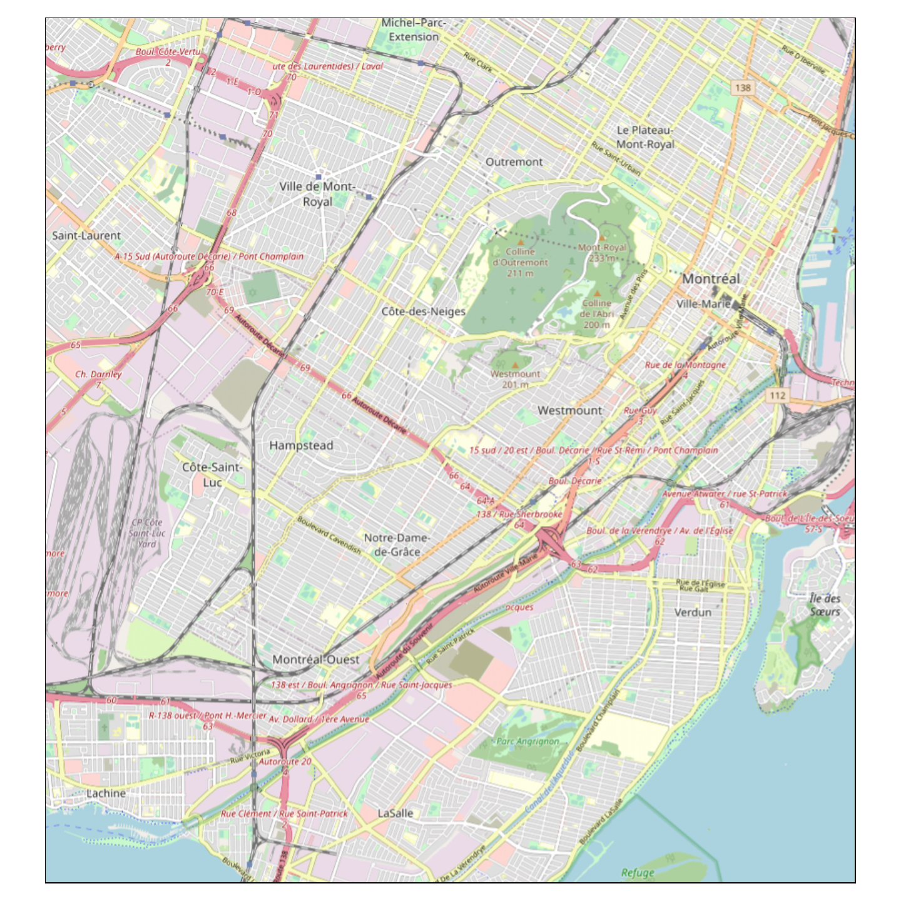

9.1 Leçon
Cette leçon est divisée en deux parties. Dans la première partie, vous apprendrez à manipuler des données spatiotemporelles de type vectoriel, et dans la seconde partie, des données spatiotemporelles de type matriciel.
Chacune des parties est structurée autour d’une problématique à résoudre. Dans la première partie, vous analyser un jeu de données de 400 trajets de cyclistes à Montréal. Cette analyse vous amènera à manipuler des objets vectoriels à des échelles de temps fines (de l’ordre de quelques heures).
Dans la seconde partie, vous étudierez l’évolution des températures et des précipitations dans la région du Parc national du Mont-Mégantic de 2007 à 2016. Vous manipulerez alors des données climatiques mensuelles sous forme d’une série de rasters.
9.1.1 Télécharger les données
Les données vectorielles et matricielles utilisées dans ce module peuvent être téléchargées en cliquant sur un seul lien: données pour le module 9. Sauvegardez le dossier compressé (zip) dans votre répertoire de travail Module9_donnees pour ce module, et dézippez-le. Le dossier comprend quatre fichiers:
maxt.ncmint.ncpcp.nctrip400.geojson.
9.1.2 Données spatiotemporelles vectorielles
Dans cette première partie, nous allons manipuler le temps et l’espace dans un ensemble de données vectorielles. Plus précisément, nous utiliserons un ensemble de données comptabilisant 400 trajets en vélo dans la ville de Montréal, et répondrons aux questions suivantes :
Quel trajet présente la vitesse moyenne la plus élevée?
Quelle est la période de l’année préférée des cyclistes du jeu de données?
Nous finirons cette partie avec un exercice de visualisation du trajet le plus long, que nous animerons.
9.1.2.1 Importer les données
Le site de la ville de Montréal et le site Données Québec, mettent à disposition un jeu de données incluant près de 5000 trajets individuels à vélo. Ces trajets ont été obtenus avec l’application “Mon RésoVélo” qui enregistre les positions de cyclistes à intervalle régulier. Les données de trajets brutes ont ensuite été traitées avant d’être rendues disponibles en ligne sous licence creative common (CC-BY). Les trajets ont notamment été anonymisés - reportez-vous au lien précédent pour plus d’informations relatives au traitement de ces données.
Ce jeu de données de 500 trajets est contenu dans un fichier zippé d’extension
GeoJSON trip5000.json que nous avons préalablement téléchargé.
Ces données étant un peu volumineuses (>150MB), nous avons seulement
conservé les 400 premiers trajets. Aussi, nous avons enlevé la colonne liste_segments_jsonb qui permet d’identifier les pistes cyclables et les portions du réseau routier emprunter par les cyclistes. Nous avons fait ce pré-traitement en utilisant des manipulations vues dans
les modules précédents et que nous décrivons ci-dessous :
library(sf)
tmp <- st_read("trip5000.json")
st_write(tmp[1:400, names(tmp) != "liste_segments_jsonb"], "trip400.geojson") Nous pouvons maintenant utiliser la fonction st_read() de la bibliothèque sf pour lire le fichier simplifié trip400.geojson disponible dans le répertoire Module9_donnees :
library(sf)
trajets <- st_read("Module9/Module9_donnees/trip400.geojson")Reading layer `trip400' from data source
`E:\ELF\Dropbox\Teluq\Enseignement\Cours\SCI1031\Developpement\Structure_test\sci1031\Module9\Module9_donnees\trip400.geojson'
using driver `GeoJSON'
Simple feature collection with 400 features and 7 fields
Geometry type: LINESTRING
Dimension: XY
Bounding box: xmin: -73.84 ymin: 45.43 xmax: -73.4 ymax: 45.7
Geodetic CRS: WGS 84L’objet trajets est de classe sf et contient un ensemble de 400 lignes décrivant les trajets à vélo et pour lesquels nous avons les informations suivantes :
names(trajets)[1] "stop" "id_origine" "start" "length"
[5] "purpose" "n_coord" "id" "geometry" Afin de résoudre notre problématique, nous utiliserons les colonnes suivantes:
start: date et heure associées au début du trajet,stop: date et heure associées à la fin du trajet,length: longueur du trajet en mètres.
9.1.2.2 Vitesse moyenne des trajets
Commençons par résoudre la première question:
Quel trajet présente la vitesse moyenne la plus élevée?
Nous avons importé 400 trajets à vélo et nous cherchons celui qui présente la vitesse moyenne la plus élevée. Pour calculer une vitesse pour un trajet en particulier, nous devons diviser sa longueur par le temps de parcours. Nous avons donc besoin de trouver d’abord la distance des trajets. Dans la table des attributs de trajets, il y a une colonne length qui nous donne cette distance.
Par exemple, nous pouvons obtenir la longueur des 10 premiers trajets :
trajets$length[1:10] [1] 3163 1066 5619 3115 5376 1153 11845 8033
[9] 21146 8315Notons qu’en l’absence de cette colonne length, nous pourrions estimer ces distances en utilisant la fonction st_length() vue au module 7 et qui calcule la longueur de chaque ligne de trajets.
len <- st_length(trajets)
len[1:10]Units: [m]
[1] 3157 1065 5614 3110 5367 1152 11828 8021
[9] 21126 8303Comment nous assurer que les distances répertoriées dans la colonne length sont identiques à celles calculées avec la fonction st_length()? Un moyen simple de le vérifier est de visualiser une distance en fonction de l’autre.
# Tracer une distance en x, et l'autre en y
plot(trajets$length, st_length(trajets),
xlab = "distance - colonne 'length' (m)", #
ylab = "distance - fonction 'st_length()' (m)",
pch = 19) # la forme des points est un cercle plein
# Tracer une ligne droite de pente 1 passant par l'origine.
# La fonction abline(a,b) permet de créer facilement une ligne en spécifiant
# le point d'interception sur l'axe des y (paramètre a) et la pente (paramètre b)
abline(a = 0, b = 1, lty = 2) # lty = 2 donne une ligne discontinue
Nous voyons ainsi rapidement que tous les points sont sur la ligne 1:1. Ceci nous permet de conclure que les valeurs sont identiques ou très proches - car nous n’avons pas fait de tests formels, et ils se pourraient donc qu’il y ait de minimes différences entre les deux distances.
Nous devons ensuite quantifier la durée des trajets pour obtenir les vitesses moyennes. Pour cela, nous avons besoin des colonnes start et stop de l’objet trajets qui donnent la date et l’heure associées au début et à la fin de chaque trajet. Par exemple, pour les 20 premiers trajets ces colonnes nous donnent :
trajets$start[1:10] [1] "2013-06-25 17:21:21 EDT"
[2] "2013-07-25 15:37:42 EDT"
[3] "2013-07-25 15:19:15 EDT"
[4] "2013-06-25 17:21:20 EDT"
[5] "2013-06-26 13:46:01 EDT"
[6] "2013-07-02 13:21:56 EDT"
[7] "2013-07-02 13:05:48 EDT"
[8] "2013-07-25 17:45:52 EDT"
[9] "2013-07-30 10:38:23 EDT"
[10] "2013-07-30 10:19:08 EDT"trajets$stop[1:10] [1] "2013-06-25 17:34:16 EDT"
[2] "2013-07-25 15:40:06 EDT"
[3] "2013-07-25 15:43:12 EDT"
[4] "2013-06-25 17:34:16 EDT"
[5] "2013-06-26 14:00:05 EDT"
[6] "2013-07-02 13:25:26 EDT"
[7] "2013-07-02 13:45:14 EDT"
[8] "2013-07-25 18:21:40 EDT"
[9] "2013-07-30 11:55:12 EDT"
[10] "2013-07-30 11:00:15 EDT"Nous remarquons que la date et l’heure sont exprimées dans un format particulier. Regardons la classe des colonnes start et stop :
class(trajets$start)[1] "POSIXct" "POSIXt" class(trajets$stop)[1] "POSIXct" "POSIXt" Les classes obtenues signifient que start et stop sont exprimés par des chaînes de caractères qui suivent une norme POSIX (Portable Operating System Interface). En l’occurrence POSIXct (calendar time) est une variété de POSIXt (time) qui contient le nombre de secondes écoulées depuis l’Heure Unix (Epoch time), le 1er janvier 1970 00:00:00 UTC (Temps Universel Coordonné). Ainsi, il est possible de convertir des objets de classe POSIXct en objet de classe numeric pour obtenir le temps écoulé en secondes, par exemple :
nb_sec <- as.numeric(trajets$start)
nb_sec[1:10] [1] 1.372e+09 1.375e+09 1.375e+09 1.372e+09 1.372e+09
[6] 1.373e+09 1.373e+09 1.375e+09 1.375e+09 1.375e+09Aussi, la soustraction de deux objets POSIXct nous donne un objet de classe difftime qui exprime une durée:
duree <- trajets$stop[1] - trajets$start[1]
dureeTime difference of 12.92 minsclass(duree)[1] "difftime"Nous pouvons aussi spécifier l’unité de temps dans laquelle nous voulons obtenir la durée entre deux évènements en utilisant la fonction R difftime(). Cette dernière est composée de trois arguments difftime(end, start, units) : la date et l’heure de l’évènement final, la date et l’heure de l’évènement initial, et l’unité désirée.
duree <- difftime(trajets$stop[1], trajets$start[1], units = 'secs')
dureeTime difference of 775 secsAinsi, nous pouvons calculer la durée de chaque trajet en seconde en utilisant la fonction difftime(). Ajoutons une colonne à l’objet trajets pour conserver le résultat de ce calcul.
trajets$duree_s <- difftime(trajets$stop, trajets$start, units = 'secs')
trajets$duree_s[1:10]Time differences in secs
[1] 775 144 1437 776 844 210 2366 2148 4609 2467Regardons maintenant les distributions de longueurs et de durées de trajets en dessinant un histogramme avec la fonction hist().
par(mfrow = c(1, 2)) # figure à deux panneaux côte à côte
hist(trajets$length,
breaks = seq(0, 44000, 2000), # spécifie les catégories de longueur
xlab = "Longueur (m)",
ylab = "Fréquence",
main = "" # pas de titre
)
hist(as.numeric(trajets$duree_s),
breaks = seq(0, 20000, 1000), # spécifie les catégories de durée
xlab = "Durée (s)",
ylab = "Fréquence",
main = "" # pas de titre
)
Nous rajoutons maintenant une colonne vitesse_m_s à trajets qui est la vitesse moyenne de chaque trajet, exprimée en mètre par seconde.
trajets$vitesse_m_s <- trajets$length/as.numeric(trajets$duree_s)
trajets$vitesse_m_s[1:10] [1] 4.081 7.403 3.910 4.014 6.370 5.490 5.006 3.740
[9] 4.588 3.370Notez que nous avons converti l’objet trajets$duree_s qui est de classe difftime en format numérique pour réaliser cette division.
Il peut être plus intuitif d’exprimer ces vitesses en kilomètre par heure, plutôt qu’en mètre par seconde, pour cela il nous suffit de diviser par 1000 [m/km] pour convertir les mètres en kilomètres et de multiplier les secondes par 3600 [s/h] pour les convertir en heures, ce qui revient à multiplier par 3.6 :
trajets$vitesse_km_h <- trajets$vitesse_m_s * 3.6
trajets$vitesse_km_h[1:10] [1] 14.69 26.65 14.08 14.45 22.93 19.77 18.02 13.46
[9] 16.52 12.13Afin de déterminer le trajet le plus rapide, nous allons maintenant ordonner les vitesses par ordre décroissant, avec la fonction sort(), et regarder les 10 premières valeurs :
vit_dec <- sort(trajets$vitesse_km_h, decreasing = TRUE)
vit_dec[1:10] [1] 365.08 39.60 38.89 34.30 34.12 33.20 30.67
[8] 30.46 29.99 29.51Le ou la plus rapide des cyclistes circule à une vitesse moyenne de 365 km/h, ce qui ne semble pas réaliste! Nous supposons qu’un problème d’enregistrement de ce trajet est à l’origine de cette valeur abberante. Nous excluons donc ce trajet et retenons le second comme étant le plus rapide. Pour extraire le second trajet, nous utilisons la fonction order().
traj_rapide <- trajets[order(trajets$vitesse_km_h, decreasing = TRUE)[2], ]
traj_rapide Simple feature collection with 1 feature and 10 fields
Geometry type: LINESTRING
Dimension: XY
Bounding box: xmin: -73.59 ymin: 45.53 xmax: -73.58 ymax: 45.53
Geodetic CRS: WGS 84
stop id_origine start
207 2013-08-05 22:00:02 3943 2013-08-05 21:58:45
length purpose n_coord id
207 847 Social 145 3943
geometry duree_s vitesse_m_s
207 LINESTRING (-73.58 45.53, -... 77 secs 11
vitesse_km_h
207 39.6Notez que la fonction order() retourne l’indice de l’élément désiré, alors que la fonction sort() retourne la valeur de l’élément.
Nous pouvons visualiser ce trajet en utilisant la fonction mapview() de la bibliothèque mapview().
library(mapview)
mapview(traj_rapide)Warning in clean_columns(as.data.frame(obj),
factorsAsCharacter): Dropping column(s) duree_s of
class(es) difftimeUn trajet bien singulier, à 22h près du parc Laurier.
Nous remarquons que l’enregistrement du trajet manque probablement de précision, ce qui expliquerait son allure quelque peu tordue…
9.1.2.3 Période de l’année préférée
Penchons-nous maintenant sur la deuxième question.
Quelle est la période de l’année préférée des cyclistes du jeu de données?
Pour répondre à cette deuxième question, nous allons utiliser certaines fonctions de la bibliothèque lubridate. Bien que R dispose, de base, de toutes les fonctionnalités nécessaires à la manipulation des dates et du temps, lubridate rend ces manipulations plus intuitives (l’aide mémoire (https://github.com/rstudio/cheatsheets/raw/master/lubridate.pdf fait un tour d’horizon complet des fonctionnalités de lubridate).
Installons donc la bibliothèque lubridate :
install.packages("lubridate")Chargeons la bibliothèque lubridate dans notre session de travail R afin de manipuler les données de classes POSIXct des colonnes start et stop. Par exemple nous pouvons extraire l’année avec la fonction year() :
library(lubridate)Warning: package 'lubridate' was built under R version
4.2.2year(trajets$start)[1:20] [1] 2013 2013 2013 2013 2013 2013 2013 2013 2013 2013
[11] 2013 2013 2013 2013 2013 2013 2013 2013 2013 2013Afin de répondre à la question, nous commençons par identifier le mois de l’année qui compte le plus de trajets à vélo. Pour cela, nous allons utiliser la fonction month() de la bibliothèque lubridate. Cette fonction nous retourne le mois associé à un objet de classe POSIXct
month(trajets$start[1])[1] 6La fonction month() nous offre aussi la possibilité d’utiliser les noms de mois (en anglais) sous forme de facteurs, de manière abrégée :
month(trajets$start[1], label = TRUE)[1] Jun
12 Levels: Jan < Feb < Mar < Apr < May < ... < Decou intégrale :
month(trajets$start[1], label = TRUE, abbr = FALSE)[1] June
12 Levels: January < February < March < ... < DecemberPour la tâche à réaliser, utilisons seulement le numéro des mois et créons une colonne mois dans la table d’attributs de l’objet trajets pour les conserver :
trajets$mois <- month(trajets$start)
trajets$mois[1:20] [1] 6 7 7 6 6 7 7 7 7 7 6 6 7 7 6 6 6 6 7 7Une manière efficace de compter le nombre d’occurrence est d’appliquer la fonction table() sur la colonne nouvellement créée :
nb_mois <- table(trajets$mois)
nb_mois
1 5 6 7 8
6 1 11 376 6 Juillet (le 7ième mois de l’année) est donc le mois qui concentre le plus de trajets à vélo dans le jeu de données étudié. Nous allons maintenant regarder le jour qui concentre le plus de trajets avec la fonction day() de la bibliothèque lubridate. Nous commençons par ajouter une colonne jour à l’objet trajets.
trajets$jour <- day(trajets$start)
trajets$jour[1:10] [1] 25 25 25 25 26 2 2 25 30 30Isolons ensuite les trajets effectués au mois de juillet.
traj_juillet <- trajets[trajets$mois == 7, ]Enfin, visualisons le nombre de trajets par jour avec les fonctions table() et barplot() cette fois-ci.
barplot(
table(traj_juillet$jour),
xlab = "Jour de juillet",
ylab = "Nombre de trajets"
)
C’est donc le 10 juillet que nous recensons le plus grand nombre de trajets.
Nous allons même aller à l’échelle de l’heure et nous recommençons les étapes précédentes avec la fonction hour(). Au passage, mentionnons la bibliothèque hms pour manipuler les heures, minutes et secondes (nous ne l’utiliserons pas ici, mais elles pourraient vous être utile dans vos projets futurs).
trajets$heure <- hour(trajets$start)
traj_10juillet <- trajets[trajets$mois == 7 & trajets$jour == 10, ]
barplot(
table(traj_10juillet$heure),
xlab = "Jours de juillet",
ylab = "Nombre de trajets"
)
C’est donc à 17h le 10 juillet que les trajets sont les plus nombreux.
9.1.2.4 Animation du trajet le plus long
Nous allons à présent animer le trajet de vélo le plus long. Nous voulons, en effet, créer un fichier GIF qui illustrera le parcours de la ou du cycliste. Pour y arriver nous devrons faire les étapes suivantes :
- Trouver le trajet le plus long.
- Associer un temps à chaque segment du parcours.
- Créer une carte pour différents états d’avancement du parcours.
- Rassembler les cartes ainsi créées et en faire un fichier GIF.
Commençons!
1. Trajet le plus long
La première étape est une manipulation de filtres que nous avons fait à maintes reprises. Cette fois-ci appliquons which.max() sur la colonne length() et nous filtrons avec [.
traj_long <- trajets[which.max(trajets$length), ]
traj_longSimple feature collection with 1 feature and 13 fields
Geometry type: LINESTRING
Dimension: XY
Bounding box: xmin: -73.69 ymin: 45.43 xmax: -73.55 ymax: 45.53
Geodetic CRS: WGS 84
stop id_origine start
69 2013-07-30 15:52:09 3082 2013-07-30 11:38:30
length purpose n_coord id
69 42503 Social 14511 3082
geometry duree_s
69 LINESTRING (-73.57 45.52, -... 15219 secs
vitesse_m_s vitesse_km_h mois jour heure
69 2.793 10.05 7 30 11Regardons ce trajet :
mapview(traj_long)Warning in clean_columns(as.data.frame(obj),
factorsAsCharacter): Dropping column(s) duree_s of
class(es) difftime2. Segmentation du trajet
Nous allons segmenter le trajet le plus long en une série de points successifs. Chaque point marquera ainsi une portion du trajet total. Nous allons ensuite associer un temps à chacune de ces portions. Pour ce faire, nous commencons par convertir la géométrie de traj_long de LINESTRING à POINT avec la fonction st_cast() vue au module 7.
traj_long_pts <- st_as_sf(st_cast(st_geometry(traj_long), to = "POINT"))
traj_long_ptsSimple feature collection with 10818 features and 0 fields
Geometry type: POINT
Dimension: XY
Bounding box: xmin: -73.69 ymin: 45.43 xmax: -73.55 ymax: 45.53
Geodetic CRS: WGS 84
First 10 features:
x
1 POINT (-73.57 45.52)
2 POINT (-73.57 45.52)
3 POINT (-73.57 45.52)
4 POINT (-73.57 45.52)
5 POINT (-73.57 45.52)
6 POINT (-73.57 45.52)
7 POINT (-73.57 45.52)
8 POINT (-73.57 45.52)
9 POINT (-73.57 45.52)
10 POINT (-73.57 45.52)Décortiquons cette ligne:
Nous isolons d’abord la géométrie de
traj_longavec la fonctionst_geometry().Nous faisons ensuite la conversion point/ligne avec la fonction
st_cast().Finalement, nous convertissons l’objet de classe
sfcainsi obtenu en objet de classesfavecst_as_sf().
L’objet traj_long_pts ainsi créé contient 10818 points
nrow(traj_long_pts)[1] 10818Maintenant, nous allons associer un temps à chaque point du trajet. D’emblée, il nous est possible de déterminer le temps de départ et le temps d’arrivée de ce trajet puisque ceux-ci sont donnés par les valeurs de traj_long$start et de traj_long$stop respectivement. De plus, l’application “Mon RésoVélo” enregistre les coordonnées spatiales le long d’un trajet à intervalle régulier. Ainsi, le temps associé à chaque point d’un trajet est réparti de façon régulière entre son temps de départ et son temps d’arrivée. Nous créons donc une séquence régulière avec la fonction R seq() en spécifiant le temps de départ, le temps d’arrivé et le nombre de points que doit inclure la séquence (argument length.out) qui est le nombre de lignes (nrow()) de la table d’attributs de traj_long_pts. Finalement, nous ajoutons cette séquence au nouvel objet traj_long_pts dans une colonne temps.
traj_long_pts$temps <- seq(
from = traj_long$start,
to = traj_long$stop,
length.out = nrow(traj_long_pts)
)3. Visualisation du trajet pour différentes périodes
À présent, nous allons visualiser le trajet parcouru sur différentes périodes de temps. Pour chaque période, nous sauvegarderons la visualisation obtenue. À la prochaine étape, nous combinerons ces images pour obtenir une animation.
Dans un premier temps, visualisons le trajet parcouru pour une période de temps arbitraire, autrement dit pour une période allant du premier point jusqu’à n’importe quel points \(n\) le long du trajet traj_long_pts. À titre d’exemple, choisissons les 2000 premiers points.
lin <- st_cast(st_combine(traj_long_pts[1:2000, ]), "LINESTRING")Cette ligne contient les étapes suivantes:
- Nous extrayons les 2000 premiers points avec
[. - Nous les combinons en
MULTIPOINTavecst_combine(). - Nous transformons le
MULTIPOINTenLINESTRINGavecst_cast().
Notons que sans l’étape (ii), st_cast() transformera chaque point en ligne ce qui donnera un ensemble de lignes de 1 seul point.
Regardons cette section du trajet avec mapview().
mapview(lin) Grâce à l’étape précédente, nous pouvons facilement avoir accès à l’heure correspondant au dernier point de cette section du trajet.
traj_long_pts$temps[2000][1] "2013-07-30 12:25:22 EDT"Avec la fonction st_length() de la bibliothèque sf nous pouvons connaître la distance parcourue pour cette section du trajet :
st_length(lin)7866 [m]Visualisons maintenant cette section du trajet en utilisant la bibliothèque tmap. Dans le titre de la carte, indiquons la distance parcourue ainsi que le temps associé. Des objets de classe caractère peuvent être combinés (c’est-à-dire écrits l’un à la suite des autres sans espacement) en utilisant la fonction R paste0().
library(tmap)
tm_shape(lin, bbox = st_bbox(traj_long_pts)) +
tm_lines(lwd = 2, col = "#62852eaa") +
tm_layout(main.title = paste0(
"temps: ",
traj_long_pts$temps[2000],
" / distance", st_length(lin)
), main.title.size = 0.9)
Pour obtenir une animation pour la totalité du trajet traj_long, nous devons alors faire cette même carte pour un nombre croissant de points et combiner toutes ces cartes en un seul fichier GIF. Puisque le trajet total compte 10818 points, cette tâche est répétitive.
Dans ce qui suit nous allons structurer notre code avec quelques fonctions. Cela nous permet d’isoler les différentes étapes à réaliser et d’éviter de répétées du code. De manière générales, structurer son code en différentes fonctions permet d’augmenter la clarté du code et de diminuer les erreurs qui arrivent rapidement quand le code se complexifie.
Nous devons donc prendre un peu de temps pour expliquer comment créer une fonction. Jusqu’ici nous avons utilisé de nombreuses fonctions déjà définies dans R ou dans les bibliothèques employées sans que nous n’ayons eu besoin de créer nos propres fonctions. Pour comprendre comment est structurée une fonction, nous allons détailler un exemple simple.
ma_fonction <- function(a, b = 1) {
if (b > 0) {
c <- a + b
} else {
c <- a - 2*b
}
return(c) # ou simplement c
}Dans R, une fonction est un objet créé avec function(). Comme tout objet nous pouvons l’assigner à une variable et dans notre exemple, nous l’assignons à ma_fonction qui sera le nom de la fonction. Dans la parenthèse qui suit function, nous écrivons les arguments de la fonction, en l’occurrence pour ma_fonction, nous avons a et b. Dans notre exemple, b a une valeur par défaut qui est 1, donc si nous ne spécifions pas b, alors b aura automatiquement une valeur de 1.
Le corps de la fonction est l’expression juste après cette parenthèse, dans notre cas cela inclut tout ce qui est entre accolades ({ }). Une fonction peut comprendre autant de ligne de code que souhaité et peut contenir n’importe quelle expression R valide. À titre d’exemple, nous avons utilisé un test logique if/else pour que la valeur retournée c change selon les valeurs de b.
Avec R, une fonction retourne la dernière ligne de code (l’utilisation de return() à la dernière ligne est ainsi optionnelle, mais elle permet de clarifier ce que retourne la fonction). Une fois la fonction créée, nous l’appelons comme toute autre fonction.
ma_fonction(1) # utlise b = 1[1] 2ma_fonction(1, 2)[1] 3ma_fonction(1, -2)[1] 5Nous sommes maintenant outillés pour créer différentes fonctions pour structurer notre code. Notre fonction principale, visual(), a pour argument les points du trajet, traj_pts, et le nombre de points à combiner, que nous appellerons n. Cette fonction reprend les étapes précédentes.
visual <- function(traj_pts, n = 100) {
# extraction des n premiers points
pts <- traj_pts[1:n, ]
# conversion des points en ligne
lin <- st_cast(st_combine(pts), "LINESTRING")
# carte de la ligne
tm_shape(lin, bbox = st_bbox(traj_long_pts)) +
tm_lines(lwd = 2, col = "#62852eaa") +
tm_layout(main.title = paste0(
"temps: ",
traj_long_pts$temps[n],
" / distance", st_length(lin)
), main.title.size = 0.9)
}Nous allons faire quelques améliorations sur le texte accompagnant les cartes en créant deux autres fonctions. La première, txt_temps(), a pour argument un temps (nous utiliserons le temps du point n) et retourne un texte formaté grâce aux fonctionnalités de la bibliothèque lubridate.
txt_temps <- function(temps) {
paste0(hour(temps), "h ", minute(temps), "m ", floor(second(temps)), "s")
} La seconde, txt_distance(), prend pour argument une ligne et retourne un texte formaté comprenant la distance en kilomètre.
txt_distance <- function(lin) {
len <- st_length(lin)
paste0("Distance parcourue: ", format(as.numeric(len)/1000, digits = 4), "km")
}Notons que la fonction R format() nous permet de contrôler le nombre de chiffres (digits) affiché. Nous allons reformuler notre fonction visual() pour qu’elle appelle ces deux fonctions.
De plus, nous y ajoutons un argument, basemap, de la bibliothèque tmap, qui nous permet d’ajouter un fond de carte. Cet argument a pour valeur NULL par défaut, ce qui nous permet d’avoir, par défaut, une carte sans fond.
Enfin, nous allons nous assurer que le nombre n de points à combiner soit supérieur à 1 car nous avons besoin d’un minimum de 2 points pour créer une ligne. Cette condition est assurée par la fonction R stopifnot().
visual <- function(traj_pts, n = 100, basemap = NULL) {
stopifnot(n > 1)
tps <- traj_pts$temps[n]
pts <- traj_pts[1:n, drop = FALSE]
lin <- st_cast(st_combine(pts), "LINESTRING")
basemap +
tm_shape(lin, bbox = st_bbox(traj_long_pts)) +
tm_lines(lwd = 2, col = "#62852eaa") +
tm_layout(main.title = paste0(txt_temps(tps), " - ", txt_distance(lin)),
main.title.size = 0.9)
}Nous pouvons maintenant faire la carte pour le nombre de points désirés, avec un minimum de 2 et un maximum de 10818 points. Pour faire la figure précédente nous utilisons le code suivant :
visual(traj_long_pts, 2000)
L’avantage du travail précédent est que nous pouvons maintenant très facilement faire la même carte en appelant notre fonction et en changeant simplement la valeur de n, par exemple, nous pouvons faire la même carte avec les 4000 premiers points.
visual(traj_long_pts, 4000)
4. Créer une animation
Nous allons maintenant créer une nouvelle fonction, anim(), qui nous permettra de générer une série de n_img images de notre trajet en appelant notre fonction visual() créée à l’étape précédente.
anim <- function(traj_pts, n_img, basemap = NULL) {
for (i in floor(seq(2, nrow(traj_pts), length.out = n_img))) {
print(visual(traj_pts, i, basemap))
}
}Quelques remarques:
La fonction
for()constitue ce qu’on appelle une boucle en programmation informatique. La boucle vient répéter une action, donnée par les lignes de codes entre les accolades{ }, pour chaque élément contenu dans une séquence.Nous utilisons
seq()pour générer une séquence den_imgimages entre 2 et le maximum de points (10818).La séquence peut générer des nombres décimaux, mais
visual()demande des nombre entiers, nous utilisons alorsfloor()pour la conversion.Nous reprenons l’argument
basemappour qu’il puisse être passé àvisual().
Observons, par exemple, la succession de cartes créées par la fonction anim() lorsque n_img = 5 :
anim(traj_long_pts, n_img = 5, NULL)


Une fois l’animation créée, pour un nombre d’images donné, nous voulons la sauvegarder en format GIF. Pour générer un fichier GIF, nous utilisons la fonction saveGIF() de la bibliothèque animation. Cette fonction prend en premier argument une expression (du code R) qui permet de générer une série de figures qui seront ensuite combinées en GIF.
Installons la bibliothèque animation.
install.packages("animation")Nous pouvons maintenant utiliser saveGIF().
library(animation)
saveGIF(anim(traj_long_pts, 20, NULL), movie.name = "anim1.gif", ani.height = 500, ani.width = 500)
Pour finir, nous allons ajouter un fond de carte. Pour cela nous allons télécharger un fond de carte de OpenStreetMap grâce à fonction osm.raster() de la bibliothèque rosm.
Installons la bibliothèque rosm.
install.packages("rosm")La fonction osm.raster() s’utilise avec la library raster. Nous devons donc charger également cette library dans notre session de travail R. Nous devons aussi spécifier à la fonction osm.raster() l’étendue de la carte de fond désirée.
library(raster)
library(rosm)
carte_fond <- osm.raster(extent(traj_long_pts), crop = TRUE)
carte_fondVisualisons cette carte de fond avec les fonctionnalités de la library tmap:
tm_shape(carte_fond) + tm_rgb()
Maintenant, répétons notre animation en remplaçant la valeur NULL de l’argument basemap par la carte de fond.
saveGIF(anim(traj_long_pts, 20, tm_shape(carte_fond) + tm_rgb()),
movie.name = "anim2.gif", ani.height = 500, ani.width = 500)
9.1.3 Données spatiotemporelles matricielles
Dans cette deuxième partie de la leçon, nous allons manipuler le temps et l’espace dans un ensemble de données matricielles. Plus précisément, nous nous intéresserons aux précipitations et aux températures moyennes autour du Parc national du Mont-Mégantic entre 2007 et 2016. Nous chercherons à répondre aux deux questions suivantes :
Quel mois dispose du plus faible niveau de pluviométrie dans la région du Parc national du Mont-Mégantic?
Où se situe le (ou les) point(s) le(s) plus chaud(s) dans la région du Parc national du Mont-Mégantic?
De plus, nous terminerons cette partie par la réalisation de deux exercices de visualisation de données :
Nous dessinerons les profils de températures et de précipitations pour la période étudiée.
Nous animerons ces profils en ajoutant une carte, elle aussi animée.
Pour pouvoir répondre à ces questions et réaliser ces exercices, nous utiliserons différents rasters qui seront manipulés sous forme d’objets rasterStack (mentionnés au Module 5).
9.1.3.1 Importer les données
Les données que nous allons utiliser dans cette partie ont été préparées à partir de données climatiques historiques à haute résolution pour l’Amérique du Nord (MacDonald et al. 2020). Ces données (issues d’un travail de modélisation) sont disponibles sur l’espace dédié à l’archivage de données du Centre allemand de calcul pour le climat, DKRZ (pour y accéder, il faut d’abord s’enregistrer sur le site). Les données sont disponibles dans le répertoire Module9_donnees et elles incluent, pour l’ensemble de l’Amérique du Nord et pour chaque mois de 1901 à 2016, les trois variables suivantes:
- la température minimale moyenne (
mint.nc), - la température maximale moyenne (
maxt.nc),
- les précipitations cumulées (
pcp.nc),
et ce, à une résolution de 60 arc-secondes.

FIGURE 9.1: Température minimale moyenne au mois de janvier 2000.
Par exemple, sur la figure 9.1, nous présentons les températures minimales moyennes pour le mois de janvier 2000.
À partir des données brutes, nous avons sélectionné les données correspondantes aux années 2007 à 2016, puis nous avons fait une opération de rognage en utilisant l’étendue spatiale suivante (dans le système géodésique mondial WGS84):
- longitude : de 72°Ouest à 71°Ouest,
- latitude : de 45°Nord à 46°Nord.
Les données préparées sont en format NetCDF (Network Common Data Form). Ces données peuvent être importées en utilisant la fonction stack() de la bibliothèque raster mais nécessitent l’utilisation de la bibliothèque ncdf4.
Commençons par installer cette bibliothèque :
install.packages("ncdf4")Puis, chargeons les bibliothèques raster et ncdf4 et importons les données en utilisant la fonction stack() :
library(raster)
library(ncdf4)
# temperature minimale par mois pour
mint <- stack("Module9/Module9_donnees/mint.nc")
# temperature maximale par mois
maxt <- stack("Module9/Module9_donnees/maxt.nc")
# total des precipitations par mois
pcp <- stack("Module9/Module9_donnees/pcp.nc")
class(mint)[1] "RasterStack"
attr(,"package")
[1] "raster"Il s’agit là d’objets de classe rasterStack que nous détaillons dans la section suivante.
9.1.3.2 Les objets rasterStack
Pour cette section, nous nous concentrons sur l’objet mint, notons cependant que tout ce que nous voyons ici s’applique aux autres objets rasterStack que nous avons importés. Inspectons rapidement ce nouvel objet.
mintclass : RasterStack
dimensions : 60, 60, 3600, 120 (nrow, ncol, ncell, nlayers)
resolution : 0.01667, 0.01667 (x, y)
extent : -71.99, -70.99, 45.01, 46.01 (xmin, xmax, ymin, ymax)
crs : +proj=longlat +ellps=WGS84 +no_defs
names : X1, X2, X3, X4, X5, X6, X7, X8, X9, X10, X11, X12, X13, X14, X15, ...
min values : -16.2, -19.9, -12.8, -4.5, 2.4, 8.2, 9.7, 9.2, 6.3, 2.7, -7.1, -13.6, -13.9, -14.5, -13.9, ...
max values : -13.9, -18.0, -9.5, -0.6, 5.5, 11.8, 13.0, 11.7, 8.7, 5.3, -4.0, -10.6, -11.8, -12.7, -10.0, ... Nous obtenons des informations similaires à celles d’un objet de classe rasterLayer, cependant la ligne qui indique les dimensions possède un élément de plus indiquant le nombre de couches, et les valeurs affichées correspondent aux valeurs minimales et maximales pour chacune des différentes couches.
Extraire les informations générales
Un raster rasterStack est en fait une collection derasterLayer qui
ont la même projection spatiale, la même résolution, la même étendue
spatiale et donc le même nombre de cellules. Pour obtenir ces informations individuellement, nous utilisons les mêmes fonctions que pour les rasterLayer.
extent(mint)class : Extent
xmin : -71.99
xmax : -70.99
ymin : 45.01
ymax : 46.01 projection(mint)[1] "+proj=longlat +ellps=WGS84 +no_defs"ncell(mint)[1] 3600Les dimensions du rasterStack peuvent être aussi être affichées avec la fonction dim()
dim(mint)[1] 60 60 120Comme nous pouvons le constater, 3 nombres sont retournés, un de plus que pour les objets rasterLayer, le dernier chiffre est le nombre de couches que nous avons mentionné plus haut, ici 120. Ce nombre peut aussi être affiché en utilisant la fonction nlayers().
nlayers(mint)[1] 120L’objet mint est une donc collection de 120 objets de classe rasterLayer, chaque couche représente des valeurs de températures minimales moyennes sur toutes la zone pour un mois donné. Ici, les couches sont ordonnées dans le temps (elles ont été combinées ainsi) et nous avons 1 couche par mois sur 10 ans.
Extraire une selection de couches
Il est possible d’accéder à n’importe quelle couche (rasterLayer) en utilisant [[:
class(mint[[1]])[1] "RasterLayer"
attr(,"package")
[1] "raster"# Raster de Température minimale du mois de janvier de la première année (2007)
mint[[1]]class : RasterLayer
band : 1 (of 120 bands)
dimensions : 60, 60, 3600 (nrow, ncol, ncell)
resolution : 0.01667, 0.01667 (x, y)
extent : -71.99, -70.99, 45.01, 46.01 (xmin, xmax, ymin, ymax)
crs : +proj=longlat +ellps=WGS84 +no_defs
source : mint.nc
names : X1
values : -16.2, -13.9 (min, max)
zvar : variable # Raster de Température minimale du mois de décembre de la dernière année (2016)
mint[[120]]class : RasterLayer
band : 120 (of 120 bands)
dimensions : 60, 60, 3600 (nrow, ncol, ncell)
resolution : 0.01667, 0.01667 (x, y)
extent : -71.99, -70.99, 45.01, 46.01 (xmin, xmax, ymin, ymax)
crs : +proj=longlat +ellps=WGS84 +no_defs
source : mint.nc
names : X120
values : -13, -9.5 (min, max)
zvar : variable Nous pouvons aussi prendre une séquence d’indices et obtenir un autre rasterStack. Par exemple, nous pouvons obtenir les données de la première année en utilisant les 12 premiers indices.
mint[[1:12]]class : RasterStack
dimensions : 60, 60, 3600, 12 (nrow, ncol, ncell, nlayers)
resolution : 0.01667, 0.01667 (x, y)
extent : -71.99, -70.99, 45.01, 46.01 (xmin, xmax, ymin, ymax)
crs : +proj=longlat +ellps=WGS84 +no_defs
names : X1, X2, X3, X4, X5, X6, X7, X8, X9, X10, X11, X12
min values : -16.2, -19.9, -12.8, -4.5, 2.4, 8.2, 9.7, 9.2, 6.3, 2.7, -7.1, -13.6
max values : -13.9, -18.0, -9.5, -0.6, 5.5, 11.8, 13.0, 11.7, 8.7, 5.3, -4.0, -10.6 Nous pouvons aussi obtenir les températures minimales pour les 10 mois de septembre, nous utilisons pour cela la fonction seq().
mint[[seq(9, by = 12, length.out = 10)]]class : RasterStack
dimensions : 60, 60, 3600, 10 (nrow, ncol, ncell, nlayers)
resolution : 0.01667, 0.01667 (x, y)
extent : -71.99, -70.99, 45.01, 46.01 (xmin, xmax, ymin, ymax)
crs : +proj=longlat +ellps=WGS84 +no_defs
names : X9, X21, X33, X45, X57, X69, X81, X93, X105, X117
min values : 6.3, 6.3, 4.7, 7.4, 8.1, 5.1, 5.8, 5.8, 8.6, 7.0
max values : 8.7, 9.3, 7.3, 10.3, 10.7, 8.4, 9.1, 8.9, 11.5, 9.3 Il est aussi possible de combiner des couches du même rasterStack et de différents rasterStack (si les contraintes spatiales sont respectées) avec stack().
stack(mint[[1]], maxt[[1]], pcp[[1]])class : RasterStack
dimensions : 60, 60, 3600, 3 (nrow, ncol, ncell, nlayers)
resolution : 0.01667, 0.01667 (x, y)
extent : -71.99, -70.99, 45.01, 46.01 (xmin, xmax, ymin, ymax)
crs : +proj=longlat +ellps=WGS84 +no_defs
names : X1.1, X1.2, X1.3
min values : -16.2, -7.6, 66.8
max values : -13.9, -3.7, 107.0 Nous avons, ici, créé un rasterStack en combinant les températures minimales et maximales, et les précipitations cumulées du mois de janvier de la première année (2007).
Extraire et manipuler les valeurs
Nous pouvons extraire les valeurs en utilisant la double indexation : [[ pour choisir les couches désirées, et puis [ pour extraire les valeurs des couches sélectionnées. Ainsi, nous pouvons extraire les valeurs des 10 premières cellules pour la première année (c’est-à-dire les 12 premiers mois).
mint[[1:12]][1:10] X1 X2 X3 X4 X5 X6 X7 X8 X9
[1,] -15.0 -19.0 -9.7 -0.9 5.5 11.8 13.0 11.5 8.7
[2,] -15.1 -19.1 -9.7 -1.0 5.5 11.7 12.9 11.4 8.7
[3,] -15.2 -19.1 -9.9 -1.1 5.4 11.6 12.8 11.3 8.6
[4,] -15.2 -19.1 -9.9 -1.1 5.4 11.6 12.7 11.3 8.6
[5,] -15.2 -19.1 -9.9 -1.1 5.3 11.6 12.7 11.3 8.6
[6,] -15.2 -19.1 -9.9 -1.1 5.3 11.6 12.7 11.3 8.6
[7,] -15.2 -19.1 -9.8 -1.1 5.3 11.6 12.8 11.3 8.6
[8,] -15.2 -19.1 -9.9 -1.2 5.3 11.5 12.7 11.2 8.5
[9,] -15.2 -19.1 -10.0 -1.2 5.3 11.5 12.6 11.1 8.5
[10,] -15.3 -19.0 -10.0 -1.3 5.2 11.4 12.5 11.1 8.5
X10 X11 X12
[1,] 5.3 -4.0 -12.2
[2,] 5.2 -4.1 -12.3
[3,] 5.1 -4.3 -12.4
[4,] 5.1 -4.4 -12.4
[5,] 5.1 -4.3 -12.4
[6,] 5.1 -4.3 -12.4
[7,] 5.1 -4.2 -12.3
[8,] 5.1 -4.4 -12.4
[9,] 5.0 -4.5 -12.5
[10,] 4.9 -4.6 -12.5Nous obtenons ainsi une matrice de 12 colonnes (1 colonne par mois) et 10 lignes (1 par cellule). Il est aussi possible d’utiliser getValues() pour obtenir l’ensemble des valeurs d’un objet rasterStack. Dans ce cas, les valeurs sont alors retournées sous forme de matrice.
val <- getValues(mint)
dim(val)[1] 3600 120Pour appliquer les mêmes opérations sur les différentes couches, il est possible d’utiliser la fonction R apply() après avoir utilisée la fonction getValues(). Par exemple, pour connaître la valeur minimale de chaque couche, nous pouvons utiliser la ligne suivante :
apply(val, 2, min) X1 X2 X3 X4 X5 X6 X7 X8 X9
-16.2 -19.9 -12.8 -4.5 2.4 8.2 9.7 9.2 6.3
X10 X11 X12 X13 X14 X15 X16 X17 X18
2.7 -7.1 -13.6 -13.9 -14.5 -13.9 -2.6 0.7 9.7
X19 X20 X21 X22 X23 X24 X25 X26 X27
11.6 9.5 6.3 -0.4 -4.9 -14.3 -21.2 -14.9 -11.2
X28 X29 X30 X31 X32 X33 X34 X35 X36
-3.2 2.1 7.6 10.1 10.9 4.7 -1.1 -2.8 -13.0
X37 X38 X39 X40 X41 X42 X43 X44 X45
-13.4 -11.2 -6.5 -1.1 3.8 8.2 12.8 10.2 7.4
X46 X47 X48 X49 X50 X51 X52 X53 X54
0.0 -5.1 -12.7 -16.2 -16.4 -11.6 -4.1 4.9 8.1
X55 X56 X57 X58 X59 X60 X61 X62 X63
11.3 10.6 8.1 1.9 -2.5 -10.3 -15.0 -12.8 -6.6
X64 X65 X66 X67 X68 X69 X70 X71 X72
-3.3 5.4 8.4 11.0 11.3 5.1 2.4 -6.8 -10.4
X73 X74 X75 X76 X77 X78 X79 X80 X81
-16.8 -14.1 -9.4 -5.0 3.5 8.5 12.7 9.8 5.8
X82 X83 X84 X85 X86 X87 X88 X89 X90
1.4 -7.6 -14.2 -17.5 -16.0 -17.8 -5.0 3.4 8.3
X91 X92 X93 X94 X95 X96 X97 X98 X99
11.1 9.8 5.8 3.0 -6.7 -10.0 -20.4 -23.2 -15.5
X100 X101 X102 X103 X104 X105 X106 X107 X108
-5.6 4.8 6.9 10.6 11.5 8.6 -1.7 -4.0 -5.7
X109 X110 X111 X112 X113 X114 X115 X116 X117
-14.0 -13.3 -9.3 -6.7 3.3 7.9 11.1 11.5 7.0
X118 X119 X120
1.5 -3.7 -13.0 Notez que l’argument 2 signifie que la fonction min() est appliquée sur la deuxième dimension de la matrice val (c’est-à-dire la dimension associée aux couches).
Nous pouvons aussi utiliser la fonction summary() qui nous donne un aperçu de la distribution des valeurs pour chaque couche. Par exemple, voici le résumé des cinq premières couches :
su_mint <- summary(mint)
su_mint[,1:5] X1 X2 X3 X4 X5
Min. -16.2 -19.9 -12.8 -4.5 2.4
1st Qu. -15.2 -19.1 -11.0 -2.2 4.1
Median -15.0 -18.9 -10.4 -1.7 4.6
3rd Qu. -14.8 -18.7 -10.3 -1.4 4.9
Max. -13.9 -18.0 -9.5 -0.6 5.5
NA's 0.0 0.0 0.0 0.0 0.0Aussi, certaines fonctions ont des comportements prédéfinies pour les objets rasterStack. Par exemple, la fonction min() retourne un objet de classe rasterLayer dont chaque cellule contient la valeur minimale des cellules des différentes couches ayant la même latitude et la même longitude (c’est-à-dire à la même position dans le raster).
min(mint)class : RasterLayer
dimensions : 60, 60, 3600 (nrow, ncol, ncell)
resolution : 0.01667, 0.01667 (x, y)
extent : -71.99, -70.99, 45.01, 46.01 (xmin, xmax, ymin, ymax)
crs : +proj=longlat +ellps=WGS84 +no_defs
source : memory
names : layer
values : -23.2, -22 (min, max)La fonction max() a le même comportement, pour une combinaison (longitude, latitude) donnée, elle retourne la valeur maximale des différentes cellules. La fonction quantile() retourne les quantiles pour les différentes couches, par défaut, 5 quantiles sont retournées. Ci-dessous, nous présentons le résultat pour les 10 premières couches.
quantile(mint)[1:10, ] 0% 25% 50% 75% 100%
X1 -16.2 -15.2 -15.0 -14.8 -13.9
X2 -19.9 -19.1 -18.9 -18.7 -18.0
X3 -12.8 -11.0 -10.4 -10.3 -9.5
X4 -4.5 -2.2 -1.7 -1.4 -0.6
X5 2.4 4.1 4.6 4.9 5.5
X6 8.2 10.3 10.8 11.1 11.8
X7 9.7 11.3 12.0 12.2 13.0
X8 9.2 10.6 10.8 11.0 11.7
X9 6.3 7.6 8.1 8.3 8.7
X10 2.7 4.3 4.6 4.8 5.3Cette opération est équivalente à appliquer la fonction apply() et quantile() après avoir utilisé getValues().
apply(val, 2, quantile)[, 1:10] X1 X2 X3 X4 X5 X6 X7 X8 X9 X10
0% -16.2 -19.9 -12.8 -4.5 2.4 8.2 9.7 9.2 6.3 2.7
25% -15.2 -19.1 -11.0 -2.2 4.1 10.3 11.3 10.6 7.6 4.3
50% -15.0 -18.9 -10.4 -1.7 4.6 10.8 12.0 10.8 8.1 4.6
75% -14.8 -18.7 -10.3 -1.4 4.9 11.1 12.2 11.0 8.3 4.8
100% -13.9 -18.0 -9.5 -0.6 5.5 11.8 13.0 11.7 8.7 5.3Il est aussi possible de faire des calculs sur les différentes couches en utilisant la fonction calc(), par exemple nous pouvons obtenir le quantiles cellule par cellule de la manière suivante :
calc(mint, quantile)class : RasterBrick
dimensions : 60, 60, 3600, 5 (nrow, ncol, ncell, nlayers)
resolution : 0.01667, 0.01667 (x, y)
extent : -71.99, -70.99, 45.01, 46.01 (xmin, xmax, ymin, ymax)
crs : +proj=longlat +ellps=WGS84 +no_defs
source : memory
names : X0., X25., X50., X75., X100.
min values : -23.200, -11.300, -1.400, 7.675, 12.800
max values : -22.000, -8.325, 1.300, 10.625, 16.100 Ce qui nous donne un objet rasterStack qui loge, sur chacune de ses 5 couches, les valeurs des différents quantiles pour chacune des combinaisons (longitude, latitude). Nous noterons alors qu’utiliser calc(mint, min) revient à utiliser min(mint).
Réaliser des opérations spatiales
Les principales opérations spatiales pour les objets de classe rasterStack utilisent les mêmes fonctions que pour les objets de classe rasterLayer. Les opérations spatiales à réaliser seront alors, au besoin, répétées sur les différentes couches (cela étant dit, pour des raisons d’optimisation algorithmiques, il se peut que les opérations soient plus rapides sur un rasterStack de \(n\) couches plutôt que d’appliquer \(n\) fois les mêmes opérations sur \(n\) objets rasterLayer).
En guise de démonstration, nous allons utiliser les fonctions projectRaster(), crop(), mask() et extract() sur le rasterStack mint (voir le Module 5 et le Module 8 pour plus de détails sur ces fonctions).
Pour illustrer le changement de projections des rasterStack, projetons mint en utilisant la projection de Mercator.
library(sf)
mint_merc <- projectRaster(mint, crs = st_crs(3857)$proj4string)
mint_mercclass : RasterBrick
dimensions : 70, 74, 5180, 120 (nrow, ncol, ncell, nlayers)
resolution : 1860, 2650 (x, y)
extent : -8027100, -7889460, 5609433, 5794933 (xmin, xmax, ymin, ymax)
crs : +proj=merc +a=6378137 +b=6378137 +lat_ts=0 +lon_0=0 +x_0=0 +y_0=0 +k=1 +units=m +nadgrids=@null +wktext +no_defs
source : memory
names : X1, X2, X3, X4, X5, X6, X7, X8, X9, X10, X11, X12, X13, X14, X15, ...
min values : -1.616e+01, -1.986e+01, -1.276e+01, -4.459e+00, 2.427e+00, 8.241e+00, 9.727e+00, 9.227e+00, 6.285e+00, 2.741e+00, -7.032e+00, -1.355e+01, -1.390e+01, -1.451e+01, -1.386e+01, ...
max values : -1.390e+01, -1.801e+01, -9.526e+00, -6.056e-01, 5.500e+00, 1.180e+01, 1.300e+01, 1.170e+01, 8.700e+00, 5.300e+00, -4.000e+00, -1.060e+01, -1.180e+01, -1.270e+01, -1.000e+01, ... Notons que la fonction st_crs() nécessite la bibliothèque sf.
Nous allons maintenant faire une opération de rognage sur mint en utilisant
l’étendue spatiale suivante (dans le système géodésique mondial WGS84):
- longitude : de 71.5°Ouest à 71°Ouest,
- latitude : de 45°Nord à 45.5°Nord.
mint_crop <- crop(mint, extent(c(-71.5, -71, 45, 45.5)))Pour les deux opérations suivantes nous allons utiliser les contours du Parc national de Frontenac qui est le premier élément de l’objet parcs_sherbrooke manipulé au Module 8 et disponible dans le répertoire Module8_donnees.
# importer le raster parcs
parcs <- st_read("Module8/Module8_donnees/parcs_sherbrooke") Reading layer `parcs_sherbrooke' from data source
`E:\ELF\Dropbox\Teluq\Enseignement\Cours\SCI1031\Developpement\Structure_test\sci1031\Module8\Module8_donnees\parcs_sherbrooke'
using driver `ESRI Shapefile'
Simple feature collection with 4 features and 18 fields
Geometry type: MULTIPOLYGON
Dimension: XY
Bounding box: xmin: -323500 ymin: 151800 xmax: -201900 ymax: 226200
Projected CRS: NAD83 / Quebec LambertNous isolons d’abord les contours du Parc national de Frontenac (parcs[1, ]) puis nous créons le shapefile frontenac en utilisant la projection de mint. Ensuite, nous utilisons la fonction mask() pour isoler les cellules de mint qui sont dans les limites du parc frontenac, et cela, pour toutes les couches de mint.
# isoler le premier élément de `parcs`, et le convertir dans le CRS de `mint`
frontenac <- st_transform(parcs[1, ], st_crs(mint))
# appliquer un mask à `mint`
mint_mask <- mask(mint, frontenac)Enfin nous pouvons extraire les valeurs des cellules de mint qui sont à l’intérieur des limites de frontenac en utilisant la fonction extract().
val_frontenac <- extract(mint, frontenac)
# la fonction extract retourne une liste, qui associe la valeur de mint à chaque cellule de chaque couche.
# Par exemple, retournons les 10 premières lignes et les 5 premiers éléments de cette liste
val_frontenac[[1]][1:10, 1:5] X1 X2 X3 X4 X5
[1,] -15.2 -19.1 -10.3 -1.8 4.7
[2,] -15.2 -19.1 -10.3 -1.9 4.6
[3,] -15.2 -19.1 -10.3 -1.9 4.6
[4,] -15.2 -19.0 -10.3 -1.8 4.7
[5,] -15.2 -19.1 -10.3 -1.9 4.7
[6,] -15.2 -19.1 -10.3 -1.9 4.6
[7,] -15.2 -19.1 -10.4 -1.9 4.6
[8,] -15.2 -19.1 -10.4 -1.9 4.6
[9,] -15.2 -19.0 -10.3 -1.8 4.8
[10,] -15.2 -19.0 -10.3 -1.8 4.7Notons qu’ici, cette opération aurait aussi pu être réalisée en utilisant getValues() sur mint_mask().
Visualiser des rasterStack
Comme pour les objets rasters, nous pouvons rapidement visualiser les objets rasterStack avec la fonction plot().
plot(mint)
Par défaut, 16 couches sont affichées au maximum. Toutefois, il est possible d’augmenter ce nombre en modifiant la valeur de l’argument maxnl :
plot(mint, maxnl = 25) 
Avec un grand nombre de cartes (au-delà de 10), il peut s’avérer difficile de visualiser correctement les données et il est parfois souhaitable de sélectionner les couches à inspecter. Par exemple, il est possible de visualiser les données des 4 derniers mois en sélectionnant les 4 dernières couches de mint.
plot(mint[[117:120]]) 
Par défaut, le titre utilisé pour chaque carte correspond au nom des couches. Pour modifier les titres, nous pouvons renommer les couches en utilisant la fonction names(). Cela dit, il y a des contraintes sur les noms des couches (par exemple, les espaces blancs sont à éviter). Pour avoir un titre libre de ces contraintes, nous pouvons utiliser l’argument main dans la fonction plot() auquel nous donnons un vecteur contenant les titres souhaités.
plot(mint[[117:120]], main = c("09/2016", "10/2016", "11/2016", "12/2016"))
La fonction mapview() peut aussi être utilisée pour visualiser les rasterStack (voir [Module 8][#mat]). Les différentes couches seront alors mises les unes par dessus les autres dans l’ordre donné (la dernière étant sur le dessus de la pile). Un trop grand nombre de couches rendra la carte difficile à interpréter. Comme mentionner précédemment, mieux vaut sélectionner un nombre limité de couches à visualiser. Ci-dessous, nous visualisons les trois premières couches.
library(mapview)
mapview(mint[[1:3]])Remarquer que vous pouvez sélectionner l’affichage de l’une ou l’autre des couches dans le menu apparaissant dans le coin gauche de la carte.
Lien entre rasterStack et objets spatio-temporels
Jusqu’ici nous avons implicitement utilisé un objet rasterStack comme un objet
spatio-temporel:
- chaque couche est bien un objet spatial (avec son étendue spatiale, sa projection, etc.)
- les couches sont ordonnées dans le temps.
Il est cependant important d’insister sur le fait qu’un rasterStack ne contient pas nécessairement un objet spatio-temporel. La seule contrainte sur les couches contenues est spatiale: étendue, projection et résolution doivent être identiques. Ainsi, il est commun de travailler sur une même période avec des objets rasterStack qui contiennent différentes variables pour une période donnée (par exemple, la température, les précipitations, l’élévation, etc.). Cela permet, entre autres, d’éviter la répétition des mêmes opérations sur plusieurs objets rasterLayer. Aussi, certaines données sont, par nature, multi-couches, c’est le cas des données d’imagerie satellitaire (on parle alors de bandes).
Jusqu’ici, nous n’avons pas formalisé l’utilisation du temps, nous savons simplement à quoi correspondent les différentes couches. Cette information a été donnée dans le texte plus haut. Toutefois, dans un contexte de partage de données, cette information aurait été ajoutée dans les métadonnées (les données qui décrivent les données).
Il existe cependant un moyen de formaliser un peu plus l’information qui ordonne les couches avec la fonction setZ()de la bibliothèque raster. Nous allons utiliser cette fonction pour associer une date à chacune des couches contenues dans le rasterStack.
En premier lieu, créons une séquence de date “mois/année”, que nous appèlerons moan, en utilisant les fonctions R rep() et paste0():
# ci-dessous la séquence 1, 2..., 12 est répétée 10 fois (i.e. chacun des 12 mois pour chacune des 10 années)
# et chacune des 10 années (2007, ..., 2016) est répétée consécutivement 12 fois
moan <- paste0(rep(1:12, 10), "/", rep(2007:2016, each = 12))
moan[1:12] [1] "1/2007" "2/2007" "3/2007" "4/2007" "5/2007"
[6] "6/2007" "7/2007" "8/2007" "9/2007" "10/2007"
[11] "11/2007" "12/2007"Nous utilisons ensuite la fonction my() de la bibliothèque lubridate pour formaliser la séquence de temps. Cette fonction transformera la séquence de caractères moan en objet de classe date donnant le mois et l’année (ainsi que le jour, correspondant au premier du mois par défaut).
library(lubridate)
temps <- my(moan)
class(temps)[1] "Date"temps[1:12] [1] "2007-01-01" "2007-02-01" "2007-03-01"
[4] "2007-04-01" "2007-05-01" "2007-06-01"
[7] "2007-07-01" "2007-08-01" "2007-09-01"
[10] "2007-10-01" "2007-11-01" "2007-12-01"Le vecteur temps que nous venons de créer correspond à la date associée à chaque couche de l’objet mint.
Nous sommes alors en mesure d’ajouter cette information à mint en utilisant la fonction setZ(). Notons que la longueur de cette séquence doit correspondre au nombre de couches du rasterStack, soit nlayers(mint) dans le cas présent, sinon un message d’erreur sera retourné.
mint <- setZ(mint, temps, name = "temps")
mintclass : RasterStack
dimensions : 60, 60, 3600, 120 (nrow, ncol, ncell, nlayers)
resolution : 0.01667, 0.01667 (x, y)
extent : -71.99, -70.99, 45.01, 46.01 (xmin, xmax, ymin, ymax)
crs : +proj=longlat +ellps=WGS84 +no_defs
names : X1, X2, X3, X4, X5, X6, X7, X8, X9, X10, X11, X12, X13, X14, X15, ...
min values : -16.2, -19.9, -12.8, -4.5, 2.4, 8.2, 9.7, 9.2, 6.3, 2.7, -7.1, -13.6, -13.9, -14.5, -13.9, ...
max values : -13.9, -18.0, -9.5, -0.6, 5.5, 11.8, 13.0, 11.7, 8.7, 5.3, -4.0, -10.6, -11.8, -12.7, -10.0, ...
temps : 2007-01-01 - 2016-12-01 (range)Nous pouvons constater qu’une ligne “temps” a été ajoutée, résumant cette nouvelle information. Ces données sont facilement accessibles avec getZ() qui nous retourne les valeurs de ce nouvel axe z.
getZ(mint)[1:10] [1] "2007-01-01" "2007-02-01" "2007-03-01"
[4] "2007-04-01" "2007-05-01" "2007-06-01"
[7] "2007-07-01" "2007-08-01" "2007-09-01"
[10] "2007-10-01"La couche mint pour une année donnée le long de cette axe de temps est accessible en utilisant [[. Par exemple, la première couche est :
mint[[1]]class : RasterLayer
band : 1 (of 120 bands)
dimensions : 60, 60, 3600 (nrow, ncol, ncell)
resolution : 0.01667, 0.01667 (x, y)
extent : -71.99, -70.99, 45.01, 46.01 (xmin, xmax, ymin, ymax)
crs : +proj=longlat +ellps=WGS84 +no_defs
source : mint.nc
names : X1
values : -16.2, -13.9 (min, max)
temps : 2007-01-01
zvar : variable Il devient alors plus aisé de trier les couches sur la date. Par exemple, nous pouvons sélectionner toutes les couches de 2015 en utilisant year() de lubridate.
mint[[which(year(getZ(mint)) == 2015)]]class : RasterStack
dimensions : 60, 60, 3600, 12 (nrow, ncol, ncell, nlayers)
resolution : 0.01667, 0.01667 (x, y)
extent : -71.99, -70.99, 45.01, 46.01 (xmin, xmax, ymin, ymax)
crs : +proj=longlat +ellps=WGS84 +no_defs
names : X97, X98, X99, X100, X101, X102, X103, X104, X105, X106, X107, X108
min values : -20.4, -23.2, -15.5, -5.6, 4.8, 6.9, 10.6, 11.5, 8.6, -1.7, -4.0, -5.7
max values : -18.6, -22.0, -11.5, -1.3, 8.1, 10.4, 14.1, 15.0, 11.5, 1.1, -0.9, -1.8
temps : 2015-01-01, 2015-02-01, 2015-03-01, 2015-04-01, 2015-05-01, 2015-06-01, 2015-07-01, 2015-08-01, 2015-09-01, 2015-10-01, 2015-11-01, 2015-12-01 Rappelons ici que la fonction which() retourne les indices des éléments qui satisfont à la condition.
9.1.3.3 Mois de plus faible pluviométrie
Nous sommes maintenant en mesure de répondre à la première question :
Quel mois dispose du plus faible niveau de pluviométrie dans la région du Parc national du Mont-Mégantic?
Pour ce faire, nous devons réaliser trois étapes :
- Isoler les cellules du rasterstack
pcpqui correspondent à la zone du Parc national du Mont-Mégantic.- Calculer la pluviométrie moyenne pour toutes les couches (c’est-à-dire tous les mois).
- Déterminer le mois et l’année pour lequel la pluviométrie moyenne ainsi calculée est la plus faible.
Commençons!
1. Cellules du Parc national du Mont-Mégantic
Nous décidons de prendre les cellules de nos couches qui sont à l’intérieur du Parc du Mont-Mégantic ainsi que les cellules qui sont proches du parc, dans un rayon de 5 km. Cette opération de buffer est très souvent utilisée pour augmenter la couverture spatiale et ainsi obtenir une moyenne climatique à une plus large échelle. Nous commençons donc par extraire les limites du parc de l’objet parcs et nous y ajoutons une zone tampon de 5 km.
megantic <- parcs[2, ]
megantic_buf <- st_buffer(megantic, dist = 5000)Ici dist = 5000, car les distances sont à exprimer en mètre, nous pouvons le savoir en regardant le champ units retourner par st_crs().
st_crs(parcs)$units [1] "m"Nous affichons maintenant, les deux objets : les limites du parc et les mêmes limites auxquelles une zone tampon de 5 km a été ajoutée.
parc_buffer <- mapview(megantic, col.regions = "seagreen") + mapview(megantic_buf, col.regions = "lightgreen")
parc_buffer@mapNous allons maintenant appeler la fonction mask() de la bibliothèque raster pour extraire les cellules désirées du raster pcp (précipitations cumulées). Utiliser cette fonction nous permet de visualiser spatialement les données extraites, mais notons que nous aurions pu aussi utiliser la fonction extract() pour répondre à la question.
pcp_megantic <- mask(pcp, st_transform(megantic_buf, st_crs(pcp)))Notez également, que nous nous sommes assurés que le raster utilisé pour créer le masque soit dans le même système de coordonnées de référence que le rasterStack interrogé.
Visualisons les quatres premières couches de pcp_megantic :
plot(pcp_megantic[[1:4]])
Celles-ci correspondent aux précipitations cumulées dans la région autour du Parc national du Mont-Mégantic pour les quatre premiers mois répertoriés.
2. Calculer la pluviométrie moyenne pour toutes les couches
Nous pouvons alors extraire les valeurs des différentes couches avec la fonction getValues() et faire la moyenne couche par couche (c’est-à-dire mois par mois) en utilisant les fonctions R apply() et mean(), sans oublier d’enlever les valeurs non attribuées (NA).
mean_pcp <- apply(getValues(pcp_megantic), 2, mean, na.rm = TRUE)Rappelez-vous que l’argument 2 signifie que la fonction mean() est appliquée sur la deuxième dimension de la matrice getValues(pcp_megantic) (c’est-à-dire la dimension associée aux couches).
Utilisons le vecteur temps créé plus tôt pour visualisons le changement dans les précipitations cumulées moyennes en fonction du temps :
plot(temps, mean_pcp)
3. Déterminer le mois de plus faible pluviométrie moyenne
Nous sommes maintenant en mesure de chercher le minimum de ces moyennes.
min(mean_pcp)[1] 39.81Cette valeur correspond à la plus faible pluviométrie moyenne. Pour quel mois cette valeur a-t-elle été enregistrée?
which.min(mean_pcp)X71
71 temps[which.min(mean_pcp)][1] "2012-11-01"# ou encore
getZ(mint)[which.min(mean_pcp)][1] "2012-11-01"C’est la couche 71 qui présente la plus faible valeur moyenne des précipitations totales, cette couche correspond au mois de novembre 2012.
9.1.3.4 Points les plus chauds
Nous allons maintenant répondre à la deuxième question :
Où se situe le (ou les) point(s) le(s) plus chaud(s) dans la région du Parc national du Mont-Mégantic?
Pour ce faire, nous allons réaliser deux étapes :
- Isoler les cellules de
maxtqui correspondent à la zone du parc du Mont-Mégantic.- Trouver la ou les cellules pour laquelle cette valeur est maximale.
Commençons!
1. Cellules du Parc national du Mont-Mégantic
Pour répondre à cette question, nous utilisons seulement les cellules contenues dans les limites du Parc national du Mont-Mégantic. Ainsi, nous n’ajouterons pas de zone tampon autour du parc.
Nous appliquons la fonction mask() au rasterStack maxt qui contient les températures maximales moyennes en utilisant les limites du parc. Comme nous avons déjà réalisé des opérations de mask() à plusieurs reprises, nous allons faire cette première étape à l’aide d’une seule ligne de commande.
maxt_megantic <- mask(maxt, st_transform(megantic, st_crs(maxt)))2. Cellules de température maximale
Pour la seconde étape, il y a plusieurs façons de procéder. Ici, nous allons procéder en deux temps : nous allons d’abord trouver la couche (ou les couches) qui contient (ou contiennent) la valeur de température maximale, puis trouver les coordonnées du point (ou des points) associées. Nous calculons donc le maximum pour chaque couche, puis nous déterminons quel est le maximum de ces maxima.
id <- which.max(apply(getValues(maxt_megantic), 2, max, na.rm = TRUE))
idX43
43 Notez que la fonction apply() calcule le maximum pour chacune des couches contenues dans maxt_megantic, alors que le fonction which.max() détermine l’indice de la couche qui contient le maximum de ces maxima.
C’est donc la couche 43 qui contient ce maximum.
Nous pouvons également déterminer que c’est au mois de juillet 2010 que ce maximum a été atteint :
temps[id][1] "2010-07-01"et que cette température était de 24.7°C :
max(apply(getValues(maxt_megantic), 2, max, na.rm = TRUE))[1] 24.7Utilisons maintenant la fonction xyFromCell() de la bibliothèque raster pour déterminer les coordonnées spatiales auxquelles cette température a été enregistrée.
xyFromCell(maxt_megantic[[id]], which.max(maxt_megantic[[id]])) x y
[1,] -71.22 45.48
[2,] -71.20 45.42
[3,] -71.18 45.42Rappelons que la fonction xyFromCell(A,id) détermine les coordonnées (x,y) de la cellule d’un raster A dont l’indice est id. Ainsi, dans la ligne de code précédente, le premier argument de la fonction xyFromCell() correspond au raster au sein duquel on recherche les coordonnées (x,y). Dans le cas présent, ce raster est la couche 43 du rasterStack maxt_megantic. Le deuxième argument correspond à l’indice de la ou des cellules qui contiennent le maximum.
Ainsi, la température maximale a été enregistrée sur trois cellules à l’intérieur du parc.
9.1.3.5 Profils de temperatures et de precipitations
Nous allons maintenant réaliser des profils de températures et de précipitations. Ces profils correspondent à l’évolution temporelle des températures (maximales et minimales) et des précipitations moyennes. Plus précisément, nous cherchons à créer des graphiques où l’ordonnée correspondra à l’une des trois valeurs environnementales moyennes et l’abscisse au temps, selon une résolution mensuelle.
Pour réaliser ces profils, nous allons faire une moyenne pour chaque couche des valeurs puis les afficher en fonction du temps. Nous allons répéter trois fois la même opération ici (une fois pour chaque rasterStack: maxt.nc, mint.nc et pcp.nc). Au lieu de copier/coller notre code pour les trois sources de données, nous allons créer une fonction profil(). Cette fonction prend en intrant ras, un objet rasterLayer ou rasterStack et masque, l’objet spatial qui sera utilisé pour découper le raster.
profil <- function(ras, masque) {
# l'argument masque doit utiliser le même SCR que ras
masque_crs <- st_transform(masque, st_crs(ras))
# extraire les valeurs de ras au sein du masque ainsi créé
ras_extract <- extract(ras, masque_crs)[[1]]
# notons que la fonction `extract()` permet de faire des extractions
# pour plusieurs polygones, ici masque_crs n'aura qu'un seul polygon et nous
# utilisons donc que le premier élément de la liste retournée par `extract()`
# calculer la moyenne pour chaque couche
apply(ras_extract, 2, mean, na.rm = TRUE)
}Cette fonction nous permet donc d’obtenir les valeurs environnementales moyennes à mettre en ordonnées de nos profils. Il nous reste à obtenir les valeurs des abscisses, autrement dit les dates pour chacune des moyennes. Comme les dates sont les mêmes pour mint, maxt et pcp, nous utilisons getZ(mint) qui nous donne exactement ce dont nous avons besoin. Notez que nous pouvons également utiliser le vecteur temps créé plus tôt.
Nous allons maintenant créer la figure. Celle-ci contiendra trois panneaux. Chaque panneau appelle la fonction profil() que nous venons de créer avec en argument l’une ou l’autre des variables environnementales (mint, maxt et pcp) ainsi que le raster correspondant aux frontières élargies du Parc national du Mont-Mégantic,megantic_buf.
Pour illustrer les températures, nous utilisons des lignes et pour les précipitations nous utilisons des barres, ces réglages peuvent se faire avec l’argument type de la fonction plot(). Enfin comme l’axe des abscisses est identique pour les trois panneaux, nous ajoutons un titre seulement à cet axe, donc seulement pour le dernier panneau.
# figures de trois lignes et 1 seule colonne
par(mfrow = c(3, 1), mar = c(4, 4, 1, 1))
plot(getZ(mint), profil(mint, megantic_buf),
type = "l", ylab = "Températures minimales (°C)", xlab = "")
plot(getZ(mint), profil(maxt, megantic_buf),
type = "l", ylab = "Températures maximales (°C)", xlab = "")
plot(getZ(mint), profil(pcp, megantic_buf),
type = "h", ylab = "Précipitations totales (mm)", xlab = "Années")
Ces profils, s’échelonnant sur plusieurs années, nous permettent d’observer la périodicité annuelle des variables environnementales illustrées.
9.1.3.6 Animations
Pour finir, nous allons animer les profils que nous venons de dessiner.
Ici, au lieu d’appeler la fonction profil() dans la fonction plot(), comme fait précédemment, nous calculons les profils des trois variables environnementales (mint, maxt et pcp) en amont. Cela permet de gagner du temps de calcul.
pr_mint <- profil(mint, megantic_buf)
pr_maxt <- profil(maxt, megantic_buf)
pr_pcp <- profil(pcp, megantic_buf)Nous allons maintenant créer une nouvelle fonction, plot_profil(), pour produire une figure affichant les profils des trois variables d’intérêt pour un nombre donné de mois. Cette fonction prend en entrée cinq arguments :
n, le nombre de mois pour lequel nous voulons afficher les profils,- les trois profils des variables environnementales d’intérêt (
pr_mint,pr_maxtetpr_pcp), et - la variable temporelle
temps.
De plus, nous voulons améliorer quelque peu le rendu visuel obtenu avec la fonction plot(). Tout d’abord, nous souhaitons
utiliser les températures minimales et maximales moyennes pour créer une envelope de températures. Cela est possible en faisant appel à la fonction polygon(). Attention, la fonction polygon() n’est pas liée à la fonction st_polygon()!
La fonction polygon(x,y,...) dessine un polygone dont les coordonnées des sommets sont données par les vecteurs x et y.
Par exemple :
# soit les vecteurs x et y des sommets du polygone
x <- c(1:6,5:1)
y <- c(2,2,2,3,3,3,4,4,4,5,5)
# tracer le polygone de couleur rose délimité par une ligne rouge
plot(c(1,6),c(1,5), type = "n")
polygon(x, y, col = "pink", lty = 2, lwd = 2, border = "red")
Deux remarques méritent d’être mentionnées :
- Un polygone est une figure fermée. Le premier et le dernier sommets sont donc joints.
- l’argument
type = "n"dans la fonctionplot()permet de créer une figure vide (dans laquelle on ajoute le polygone).
Ainsi, pour créer une enveloppe, nous définissions les sommets du polygone en utilisant la variable temporelle temps pour définir les coordonnées en x, et les profils pr_mintet pr_maxt pour définir les coordonnées en y.
De plus, toujours dans l’objectif d’améliorer le rendu visuel de la figure, nous ajoutons les valeurs de précipitations sur la même figure que celle des températures.
La fonction plot_profil() prend la forme suivante :
plot_profil <- function(n, pr_mint, pr_maxt, pr_pcp, temps) {
# Créer un vecteur allant de 1 à n
id <- seq_len(n)
# Premier affichage sur la figure: les temperatures
# definition des paramètres (par) de ce premier graphique:
# les marges (mar) et le style d'écriture horizontal sur les axes (las = 1)
par(mar = c(4, 4.5, 1, 4.5), las = 1)
# créer une figure vide (type = "n")
# dont la limite des axes est définie par les températures minimale et maximale
plot(range(temps), c(min(pr_mint), max(pr_maxt)), type = "n",
xlab = "Années", ylab = "Températures minimales et maximales (°C)")
# créer une enveloppe
polygon(c(temps[id], rev(temps[id])), c(pr_mint[id], pr_maxt[rev(id)]), col = "#aaaaaa", border = "#6a6a6a")
# Deuxième affichage sur la figure: les précipitations
# permettre de recommencer à dessiner sur la figure
par(new = TRUE)
# créer une figure vide (type = "n")
# dont la limite des axes est définie par l'étendue des valeurs de temps et de précipitations
# sans ajout d'axes (axes), et sans annotation sur les axes (ann)
plot(range(temps), range(pr_pcp), type = "n", axes = FALSE, ann = FALSE)
# ajouter des points pour chaque valeur du vecteur id
points(temps[id], pr_pcp[id], type = "h", col = "#c62b63", lwd = 2)
# ajout d'un axe à droite
axis(4)
# ajouts d'un texte à droite
mtext("Précipitations totales (mm)", side = 4, line = 3, las = 0, col = "#c62b63")
# Ajouter le mois en bas a gauche de la figure
mtext(temps[n], side = 1, line = 2.5, at = as.Date("2007-01-01"),cex = 1.4)
}Nous devons maintenant passer les profils calculés précédemment à la fonction plot_profil() pour les afficher. Par exemple, pour visualiser les profils pour les 40 premiers mois, nous utilisons la valeur 40 pour n.
plot_profil(40, pr_mint, pr_maxt, pr_pcp, temps)
Finalement, nous utilisons la fonction saveGIF() de la bibliothèque animation, pour enregistrée une séquence de figures produites avec plot_profil() en faisant évoluer le nombre de mois :
library(animation)
saveGIF({
# nous générons une figure par trimestre en commençant au mois de mars
for (i in seq(3, 120, by = 3)) plot_profil(i, pr_mint, pr_maxt, pr_pcp, temps)
}, movie.name = "anim3.gif", ani.height = 400, ani.width = 600)